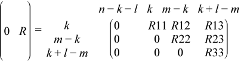

Computes generalized SVD.
Syntax
call sggsvd3(jobu, jobv, jobq, m, n, p, k, l, a, lda, b, ldb, alpha, beta, u, ldu, v, ldv, q, ldq, work, lwork, iwork, info)
call dggsvd3(jobu, jobv, jobq, m, n, p, k, l, a, lda, b, ldb, alpha, beta, u, ldu, v, ldv, q, ldq, work, lwork, iwork, info)
call cggsvd3(jobu, jobv, jobq, m, n, p, k, l, a, lda, b, ldb, alpha, beta, u, ldu, v, ldv, q, ldq, work, lwork, rwork, iwork, info)
call zggsvd3(jobu, jobv, jobq, m, n, p, k, l, a, lda, b, ldb, alpha, beta, u, ldu, v, ldv, q, ldq, work, lwork, rwork, iwork, info)
Include Files
- mkl.fi
Description
?ggsvd3 computes the generalized singular value decomposition (GSVD) of an m-by-n real or complex matrix A and p-by-n real or complex matrix B:
UT*A*Q = D1*( 0 R ), VT*B*Q = D2*( 0 R ) for real flavors
or
UH*A*Q = D1*( 0 R ), VH*B*Q = D2*( 0 R ) for complex flavors
where U, V and Q are orthogonal/unitary matrices.
Let k+l = the effective numerical rank of the matrix (ATBT)T for real flavors or the matrix (AH,BH)H for complex flavors, then R is a (k + l)-by-(k + l) nonsingular upper triangular matrix, D1 and D2 are m-by-(k + l) and p-by-(k + l) "diagonal" matrices and of the following structures, respectively:
If m-k-l≥ 0,
where
C = diag( alpha(k+1), ... , alpha(k+l) ),
S = diag( beta(k+1), ... , beta(k+l) ),
C2 + S2 = I.
If m - k - l < 0,


where
C = diag(alpha(k + 1), ... , alpha(m)),
S = diag(beta(k + 1), ... , beta(m)),
C2 + S2 = I.
The routine computes C, S, R, and optionally the orthogonal/unitary transformation matrices U, V and Q.
In particular, if B is an n-by-n nonsingular matrix, then the GSVD of A and B implicitly gives the SVD of A*inv(B):
A*inv(B) = U*(D1*inv(D2))*VT for real flavors
or
A*inv(B) = U*(D1*inv(D2))*VH for complex flavors.
If (AT,BT)T for real flavors or (AH,BH)H for complex flavors has orthonormal columns, then the GSVD of A and B is also equal to the CS decomposition of A and B. Furthermore, the GSVD can be used to derive the solution of the eigenvalue problem:
AT*AX = λ* BT*BX for real flavors
or
AH*AX = λ* BH*BX for complex flavors
In some literature, the GSVD of A and B is presented in the form
UT*A*X = ( 0 D1 ), VT*B*X = ( 0 D2 ) for real (A, B)
or
UH*A*X = ( 0 D1 ), VH*B*X = ( 0 D2 ) for complex (A, B)
where U and V are orthogonal and X is nonsingular, D1 and D2 are "diagonal''. The former GSVD form can be converted to the latter form by taking the nonsingular matrix X as
Input Parameters
- jobu
CHARACTER*1. = 'U': Orthogonal/unitary matrix U is computed;
= 'N': U is not computed.
- jobv
CHARACTER*1. = 'V': Orthogonal/unitary matrix V is computed;
= 'N': V is not computed.
- jobq
CHARACTER*1. = 'Q': Orthogonal/unitary matrix Q is computed;
= 'N': Q is not computed.
- m
INTEGER. The number of rows of the matrix A.
m≥ 0.
- n
INTEGER. The number of columns of the matrices A and B.
n≥ 0.
- p
INTEGER. The number of rows of the matrix B.
p≥ 0.
- a
REAL for sggsvd3
DOUBLE PRECISION for dggsvd3
COMPLEX for cggsvd3
DOUBLE COMPLEX for zggsvd3
Array, size (lda, n).
On entry, the m-by-n matrix A.
- lda
INTEGER. The leading dimension of the array a.
lda≥ max(1,m).
- b
REAL for sggsvd3
DOUBLE PRECISION for dggsvd3
COMPLEX for cggsvd3
DOUBLE COMPLEX for zggsvd3
Array, size (ldb, n).
On entry, the p-by-n matrix B.
- ldb
INTEGER. The leading dimension of the array b.
ldb≥ max(1,p).
- ldu
INTEGER. The leading dimension of the array u.
ldu≥ max(1,m) if jobu = 'U'; ldu≥ 1 otherwise.
- ldv
INTEGER. The leading dimension of the array v.
ldv≥ max(1,p) if jobv = 'V'; ldv≥ 1 otherwise.
- ldq
INTEGER. The leading dimension of the array q.
ldq≥ max(1,n) if jobq = 'Q'; ldq≥ 1 otherwise.
- work
REAL for sggsvd3
DOUBLE PRECISION for dggsvd3
COMPLEX for cggsvd3
DOUBLE COMPLEX for zggsvd3
Array, size (max(1,lwork)).
- lwork
INTEGER. The dimension of the array work.
If lwork = -1, then a workspace query is assumed; the routine only calculates the optimal size of the work array, returns this value as the first entry of the work array, and no error message related to lwork is issued by xerbla.
- rwork
for sggsvd3
for dggsvd3
REAL for cggsvd3
DOUBLE PRECISION for zggsvd3
Array, size (2*n).
- iwork
INTEGER. Array, size (n).
Output Parameters
k, l |
INTEGER. On exit, k and l specify the dimension of the subblocks described in the Description section. k + l = effective numerical rank of (AT,BT)T for real flavors or (AH,BH)H for complex flavors. |
a |
On exit, a contains the triangular matrix R, or part of R. If m-k-l≥ 0, R is stored in a(1: k + l,n - k - l + 1:n). If m - k - l < 0, is stored in a(1:m, n - k - l + 1:n), and R33 is stored in b(m - k + 1:l,n + m - k - l + 1:n) on exit. |
b |
On exit, b contains part of the triangular matrix R if m - k - l < 0. See Description for details. |
alpha |
REAL for sggsvd3 DOUBLE PRECISION for dggsvd3 REAL for cggsvd3 DOUBLE PRECISION for zggsvd3 Array, size (n) |
beta |
REAL for sggsvd3 DOUBLE PRECISION for dggsvd3 REAL for cggsvd3 DOUBLE PRECISION for zggsvd3 Array, size (n) On exit, alpha and beta contain the generalized singular value pairs of a and b; alpha(1: k) = 1, beta(1: k) = 0, and if m - k - l≥ 0, alpha(k + 1:k + l) = C, beta(k + 1:k + l) = S, or if m - k - l < 0, alpha(k + 1:m) = C, alpha(m + 1:k + l) = 0 beta(k + 1: m) =S, beta(m + 1: k + l) = 1 and alpha(k + l + 1: n) = 0 beta(k + l + 1: n) = 0 |
u |
REAL for sggsvd3 DOUBLE PRECISION for dggsvd3 COMPLEX for cggsvd3 DOUBLE COMPLEX for zggsvd3 Array, size (ldu, m). If jobu = 'U', u contains the m-by-m orthogonal/unitary matrix U. If jobu = 'N', u is not referenced. |
v |
REAL for sggsvd3 DOUBLE PRECISION for dggsvd3 COMPLEX for cggsvd3 DOUBLE COMPLEX for zggsvd3 Array, size (ldv, p). If jobv = 'V', v contains the p-by-p orthogonal/unitary matrix V. If jobv = 'N', v is not referenced. |
q |
REAL for sggsvd3 DOUBLE PRECISION for dggsvd3 COMPLEX for cggsvd3 DOUBLE COMPLEX for zggsvd3 Array, size (ldq, n). If jobq = 'Q', q contains the n-by-n orthogonal/unitary matrix Q. If jobq = 'N', q is not referenced. |
work |
On exit, if info = 0, work(1) returns the optimal lwork. |
iwork |
On exit, iwork stores the sorting information. More precisely, the following loop uses iwork to sort alpha: for I = k+1, min(m,k + l) swap alpha(I) and alpha(iwork(I)) endfor such that alpha(1) ≥alpha(2) ≥ ... ≥alpha(n). |
info |
INTEGER. = 0: successful exit. < 0: if info = -i, the i-th argument had an illegal value. > 0: if info = 1, the Jacobi-type procedure failed to converge. For further details, see subroutine ?tgsja. |
Application Notes
?ggsvd3 replaces the deprecated subroutine ?ggsvd.